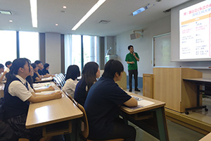
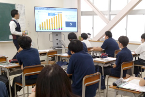

在校生・卒業生の声
授業で身につけた技術、取得した資格、完成させた作品を、大学、短期大学、専門学校での学びへつなげています。
- 在校生・卒業生の声
- C++で2Dシューティング制作
- ITパスポート 2名合格
- 神戸・流通科学 学校見学ツアー
- 大学・専門学校見学ツアー
進路と卒業生
大学、短期大学、専門学校、就職へ、授業で身につけた技術・資格・作品をつなげます。


授業で身につけた技術、取得した資格、完成させた作品を、大学、短期大学、専門学校での学びへつなげています。
情報学、工学、デザイン、経営情報を学べる大学・短期大学へ進み、高校で得た基礎を専門研究や制作へ発展させます。
ゲーム、CG、Web、広告、情報処理など、目指す職種に近い設備と制作課題を持つ専門学校へ進んでいます。
情報処理、表現、事務活用の力を、電子部品、製造、販売、公共分野などの仕事へつなげています。